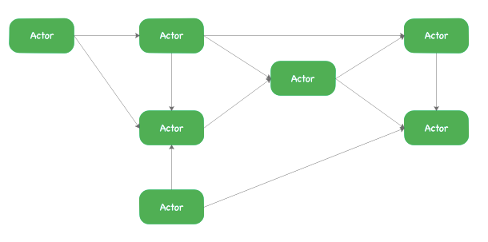
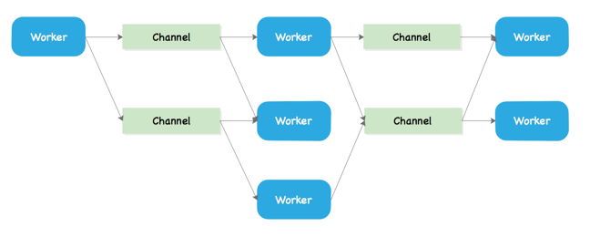

Actor模型
提到Actor模型就不得不提CSP模型（Communicating Sequential Processes）模型，本章主要介绍Actor模型，同时对比一下Actor模型和CSP模型的一些小区别，希望读者从概念上先理解Actor模型，关于Actor模型的更底层的理论，读者可以参考《并发之痛Thread、Gorouting、Actor》，这里我就再赘述了。
1. Actor模型
在Actor并发模型中，它的主角是Actor，实际上它类似于一种Worker线程，它们之间通过消息相互通信（在Vert.x中，它们之间的消息介质就是Event Bus），这些消息的发送是异步的，可并行。

Actor模型可用上述图来描述，且满足一定的原理：
- 所有Actor的状态由Actor自身维护，且外部不可访问它，除非它自己暴露了访问自身状态的接口；
- Actor和Actor之间的通信使用的是消息；
- 一个Actor可发送消息给另外一个Actor，也可以响应另外一个Actor发过来的消息，同时它可以改变自身的内部状态；
- Actor可能阻塞自己（就是内部调用阻塞IO的代码，但Actor不应该阻塞它运行的线程）。
Actor模型的代表：Akka/Erlang、以及我们将要学习的Vert.x都是使用的Actor模型。
2. CSP模型
另外一种流行的模型是CSP模型，也就是Channel模型，在这种模型中，在Worker和Worker之间引入了一种新的机制，称为Channel，这种模型的Worker线程相互之间是通过Channel进行消息发布、以及监听，而且Worker之间相互透明：它既不知道消息发送给谁，也不知道自己消费的消息是哪一个Worker发出的。

Go语言就是使用的这种CSP模型，它利用协程Goroutine和通道Channel实现：
- Go协程Goroutine：它是一种轻量级线程（并非操作系统的线程，而是将一个操作系统线程分段使用，通过调度器实现协作式调度。）它是一种绿色线程，又可称为微线程，它和Corouting协程的区别在于：当它发现阻塞后会启动新的微线程。
- 通道Channel：类似Unix的Pipe，用于协程之间通讯和同步，虽然协程自身之间已经解耦，但Worker和Channel之间依然存在耦合。
3. 进程、线程、协程
这里不解释并发（Concurrency）和并行（Parallelism）的区别，先看看三个基本概念：进程、线程、协程【Reference】。
- 进程出现的目的是为了更好地利用CPU资源，使得并发称为可能。比如任务A和B，当A处理IO操作，CPU默默等待A，然后执行B，这样实际上就浪费了CPU资源，进程的出现使得A和B在“等待”过程可以进行任务切换，比如A进程和B进程分别执行这两个任务，进程中保存了各自的任务状态，包括需要的内存、硬盘、CPU等资源，操作系统则通过进程来标识任务，调度资源。——简单说进程是系统资源分配的最小单位。
- 线程的出现则是降低上下文切换的消耗，提高系统的并发，并且突破一个进程只能干一件事的缺陷，使得进程内实现并发。按照上述进程合理利用CPU资源的思路，线程的出现就是合理利用进程资源，多个进程同时执行时，由于它们可相互通信协作，而在CPU分配资源时进程和进程之间不停进行上下文切换，这种切换是很耗资源的。而线程是进程内的机制，它们共享了进程的大部分资源，且参与了CPU的调度，而自身又保留了自己的栈、寄存器等——这个时候进程就充当了线程的容器。
- 协程又往下走了一级，它可在线程内实现调度，避免了内核级别的上下文切换造成的性能损失，进而去突破线程在IO上的性能瓶颈。当程序遇到大规模的并发连接时，若在进程内以线程作为最小处理单元，实际上其开销还是不小，之中最耗资源的依旧是上下文切换，为了减少这种上下文切换，所以让线程内部实现自己的调度，而不去内核级别做上下文切换。
思考：
实际上，从进程、到线程、到协程，都是为了最大化地利用计算机本身的资源不断进步的一个概念，读者会发现其思路是一致的：
- 进程是为了提高CPU的利用率，减少CPU资源调度过程中的上下文切换，它是操作系统中的最小单位。
- 线程则是为了提高进程内的资源利用率，突破进程本身的缺陷，在进程内部实现并发，它是进程内的最小单位。
- 协程（又称微线程）往下再走一级，提高线程内的资源利用率，减少上下文切换的开销，突破线程本身的缺陷，它是线程内的最小单位。
总地来说，主要是从提高资源利用率、减少上下文（进程、线程、协程的上下文不一样）切换的开销、减少IO的阻塞或者更加高效处理阻塞，同时将每一个级别的使用并行化。
【注：最后需要说明的一点是，线程不一定比进程快，而协程不一定比线程快，它们只是理论上的一种资源利用的突破，而具体的业务场景有时候还是会影响到三者的效率。至于在协程之后会不会出现另外一种X程，这个只能拭目以待，毕竟这个过程是一步一步突破而来的。】
4. Summary
本文主要是为大家介绍Actor模型，顺带介绍CSP模型，关于并发的相关细节大家还是可以参考最开始推荐的文章，了解更多并发相关的知识点，由于Vert.x中使用了Actor模型，那么对Actor模型的理解对读者而言可帮助理解Verticle在Vert.x中的概念。这也是本身支线剧情介绍Actor模型的原因。